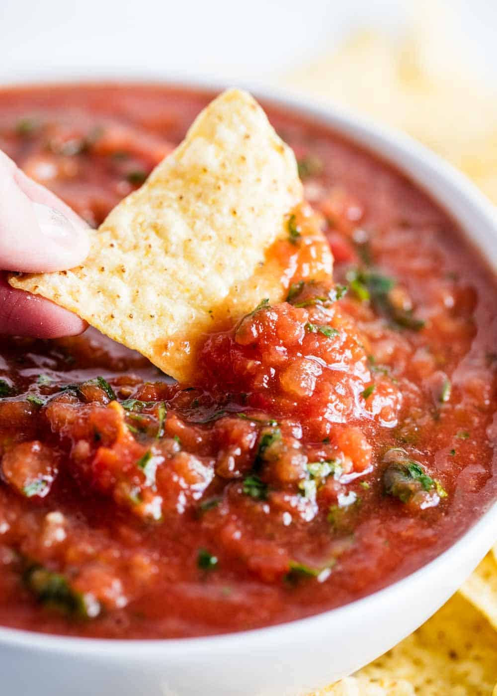

Salsa
A delicious snack that goes well with tacos/fajits/quesadillas

Ingredients
- 2 cups chopped tomatoes
- 1/4 cup chopped red onion
- 1/4 cup chopped yellow onion
- 2 tablespoons canned green chilies
- 2 tablespoons fresh lime juice
- 2 cloves garlic, peeled
- 1 tablespoon ground cumin
- 1/4 teaspoon salt
Instructions
- Add ingredients to a food processor/blender in the order listed above
- Salt to taste
- Add water if too thick
- Grab some chips and enjoy!